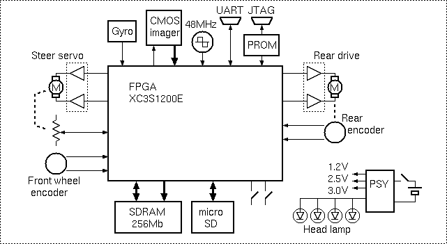
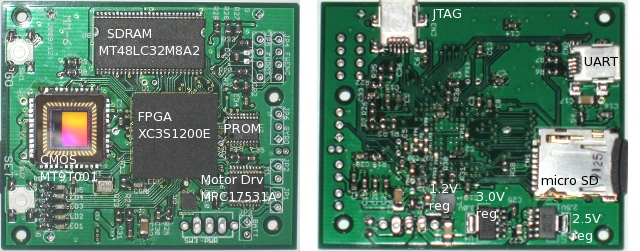

ハードウェア
mm-6/ハードウェア
システム構成
システム構成図
mm-6 は、FPGA（Xilinx社 XC3S1200E）を中心にシステムを構成しています。FPGAには以下のようなデバイスを接続しています。
- CMOS imager (Aptina社 MT9T001)
- 10bitディジタル画像信号を取り込み、縮小処理後 SDRAMに書き込む
- 2ch Motor Driver (Freescale社 MPC17531A)
- H-bridge モータードライバ。ステアリングサーボモータ、及び後輪駆動モータ用
- 正負自動切り替えPWM回路
- 2ch 2相ロータリーエンコーダ
- 古いボールマウスから取り出したエンコーダ。前輪用、及び後輪用
- 位相弁別アップダウンカウンタ。パルスの周期検出カウンタ
- SDRAM (Micron社 MT48LC32M8A2) 256Mbit x8
- 画像データ一時格納、プログラム格納実行、ログデータ一時格納
- micro SD card
- MMC SPIモードで使用（SDの規格は非公開）
- 組み込み用 FAT16*1 を使用
- プログラム格納、ログデータ格納、画像データ格納
- UART
- デバッグ用ターミナルを接続。115.2kbaud
- JTAG, PROM(Xilinx社 XCF04S)
- FPGA のコンフィグレーション
- 3ch Analog入力(FPGAの差動レシーバを応用)
- ステアリングサーボ用ポテンショメータ
- Gyro(村田製作所 ENC-03R)
- 電池の電圧モニタ
- 48MHz発振器
- CMOS imager のクロック
- PLLでx2 → 96MHz SDRAMのクロック
- PLLでx5/8 → 30MHz CPU及びPWMなど周辺回路
メイン基板
